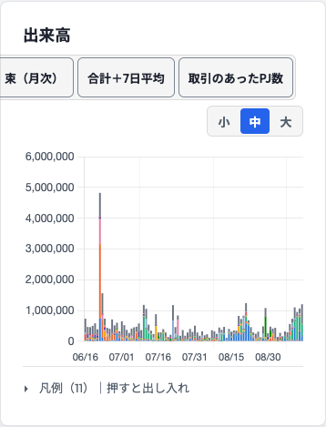
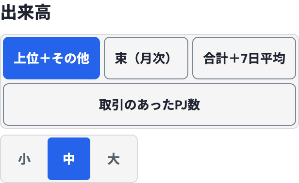
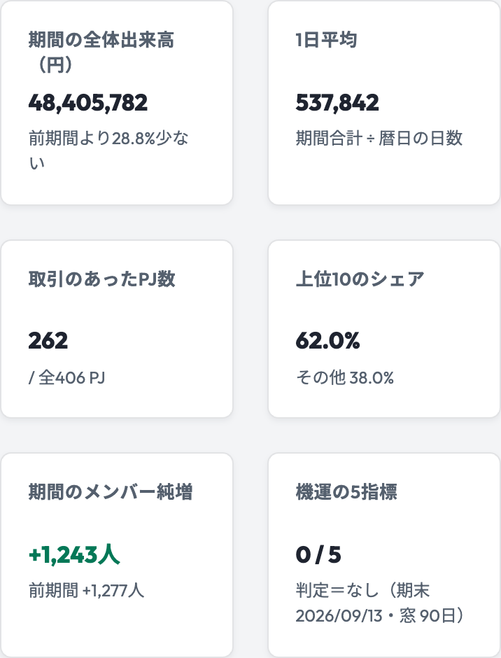
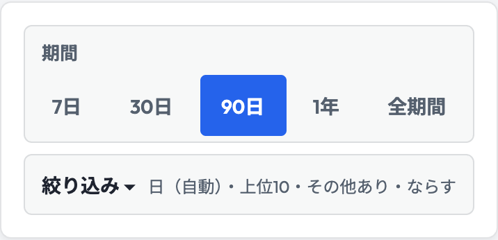
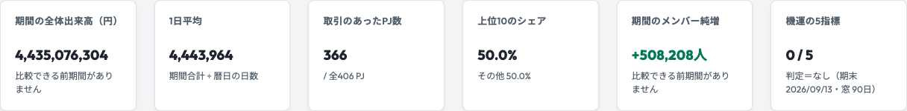
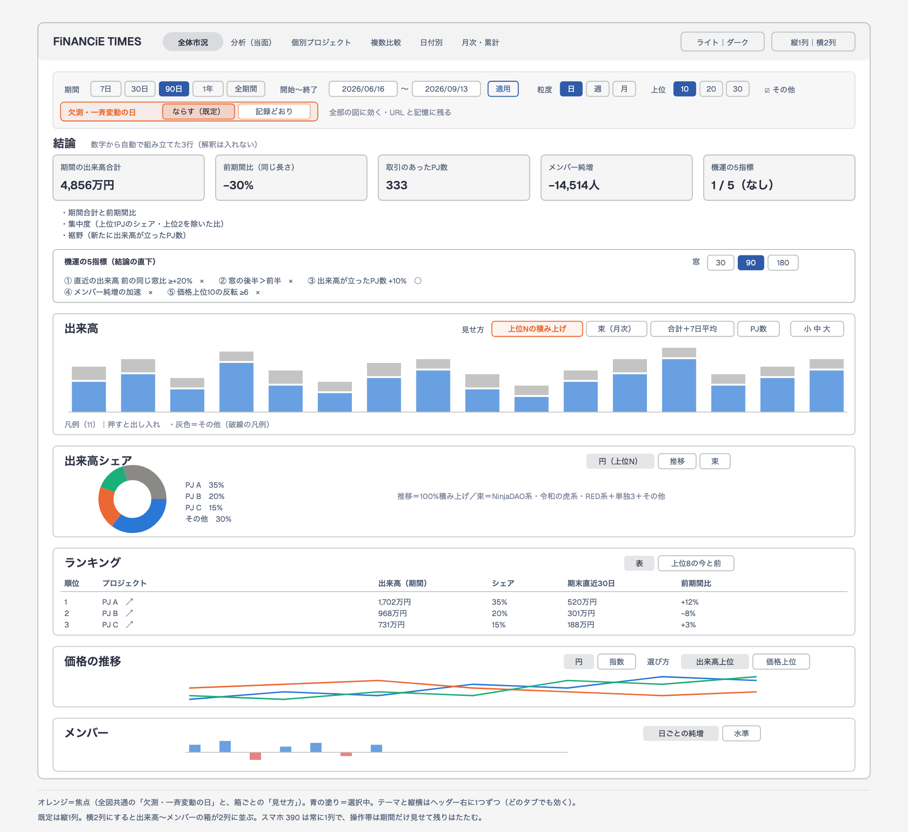
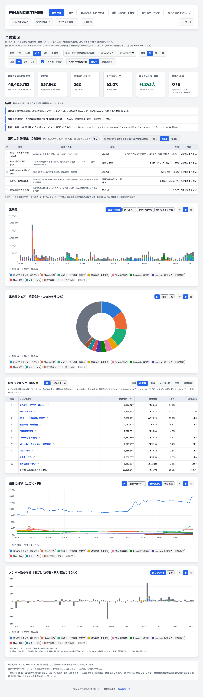
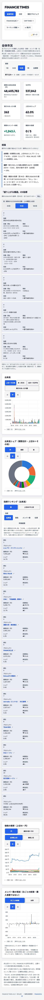
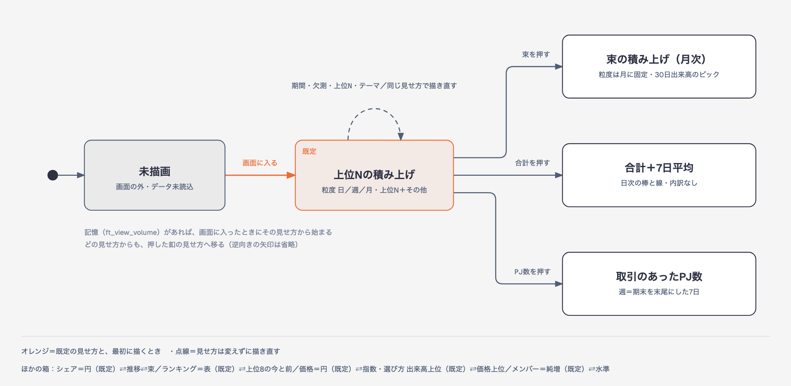
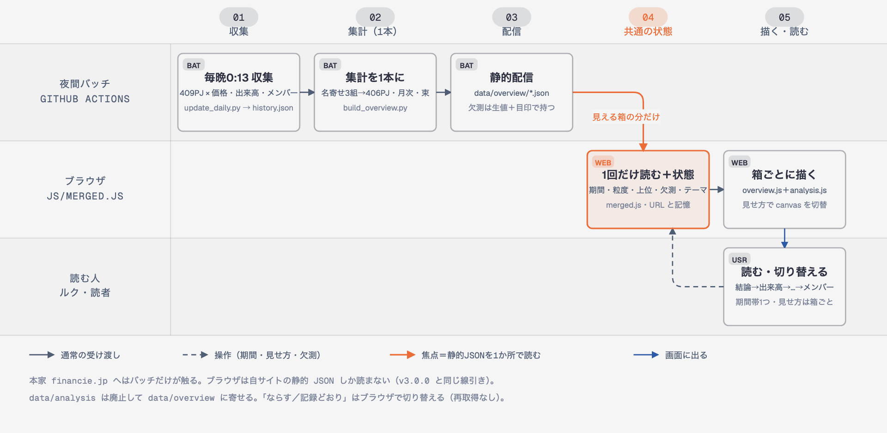

全体状況：エマ（2回）と断の指摘をすべて直し、v3.2.2 をステージングに出しました。
結論：検査は8本とも全部通過。本番（GitHub Pages）には出していません（今の本番は v3.1.1）。
ステージング：https://financie-times-analysis-staging.ruku-practice.workers.dev/financie/（右下が v3.2.2 なら最新）
検収：エマ・断とも 通す（12:20・12:21）。残りは任意の1件（KPI の補足の改行）だけです。
エマ・断とも通した
release_merged.sh --execute（1・2が欠けていると止まる）次の一歩：スマホでステージングを開き、「絞り込み ▾」と出来高の見せ方の釦を押してみる → 社長室に「A」「B」「C」のどれかを一言。





| 版 | 重さ | 指摘 | どう直したか | 検査 |
|---|---|---|---|---|
| v3.2.2 | 中A | スマホで開いただけだと KPI 2枚と結論が「-」のまま | KPI の並びが画面に入った時点で描く・取得中は「読み込み中」 | M23 |
| v3.2.2 | 中B | PC 全期間で KPI の数値がカードをはみ出す | カードの幅に合わせて数値の文字を縮める | M22 |
| v3.2.2 | 重1（断） | 日付で期間を入れると、前の期間の釦が読み上げで「押されている」のまま | 釦の選択の印を見た目と読み上げの両方で外す | M24 |
| v3.2.2 | 軽6 | シェア推移の見出し・「前期間比は比較できず」・注記の句点・要約の「自動」・「前の90日」と「前期間」・ランキングの釦の左端（KPI の補足の改行は任意＝まだ） | 見出しと語をそろえ、余白を 24px に | M11・M13・M17・M19 |
| v3.2.1 | 重1 | スマホで見せ方の釦が画面外・既定に戻れない | 左寄せ・幅いっぱいで折り返し | M17・M18 |
| v3.2.1 | 中2〜中9 | メンバー純増が期間に従わない・KPI の高さ・9位と10位の色・シェアの束の見出し・ISO 週の注記・前期間比 -・呼び名・スマホの操作帯が長い | 期間の合計に／高さをそろえる／検証済み10色／見出しと語をそろえる／「絞り込み ▾」でたたむ | M10〜M16・M19 |
| v3.2.1 | 軽 | ならすの説明の語・全期間で粒度が黙って週に・小中大と日付別の並べ替え釦が 44px 未満・並べ替え中の列が分からない | 語をそろえ、注記を出し、44px に、見出しに ▼ | M11・M17・M20・M21 |





| 変わる所 | 中身 |
|---|---|
| 名寄せ | TEAM RED・肝高の山本商店・音夢パンダの3PJは前身の記録を含みます（409→406PJ）。個別ページは今の記録だけのままです |
| 欠測 | 既定は「ならす」。「記録どおり」にすると出来高は分析レポートと同じ数字になります（90日：ならす 48,405,782円／記録どおり 49,034,819円） |
| メンバー純増 | KPI は選んだ期間の合計（90日 +1,243人・前期間 +1,277人）。機運の5指標の④は「期末からの窓」の値で、期間では変わりません |
| 期間と週 | 期間は暦日で数えます。週は期末を末尾にした7日で、先頭の7日に満たない日は週に入れません（その旨を操作帯に表示） |
| 色 | 上位10は検証済みの10色、「その他」は斜線の見本で見分けます |
| 検査 | 項目 | 結果 |
|---|---|---|
| 合体の画面（直しのたびに M10〜M24 の15項目を追加） | 32 | ALL PASS |
| 全体市況（既存・スマホの操作帯は開いてから測る形に変更） | 80 | ALL PASS |
| 分析タブ（旧・残す間） | 57 | ALL PASS |
| 集計の式を実データで別実装と突き合わせ | 31 | ALL PASS |
| 集計の式の単体 | 15 | ALL PASS |
| 集計ファイルの中身 | 13 | ALL PASS |
| 日付別ランキングの並べ替え（全992日） | 8 | ALL PASS |
| 分析の部品の分離 | 6 | ALL PASS |
| 誰が | 判定 | 要点 |
|---|---|---|
| エマ（v3.2.2・軽） | 通す | 中A（開いて1.4秒で埋まる）・中B（余裕 17.6px）・断の重1 は○。軽7のうち KPI の補足の改行だけ×（任意・次の版） |
| 断（v3.2.2・軽） | 通す | 検査32件を自分で回して ALL PASS・わざと壊した1件（KPI の見張りを外す）で検査が正しく赤くなった・重1は3か所とも直っている |
| エマ（v3.2.1・再確認） | 条件つき | 前回の16件は全部○。新しく中A・中B・軽7 → v3.2.2 で直した |
| 断（v3.2.1・深さ標準） | 条件つき | 検査239件を自分で回して ALL PASS・わざと壊した3件はすべて検査が正しく赤くなった。重1 → v3.2.2 で直した |
| エマ（v3.2.0）・断（v3.2.0 軽） | 条件つき・通す | 重1・中8・軽4 → v3.2.1 で直した |
| Astra（設計のセカンドオピニオン） | 方向は OK | 重大6点を実装の前に「契約」として決めて反映済み |
| スマホの「絞り込み ▾」 | 最初はたたむ。右に「粒度・上位・その他・欠測」の要約。「（自動）」は期間に合わせて週にしたときだけ。PC では出さない |
| 9位・10位の色 | 青緑 #0e8fa8・赤茶 #a0522d（ダーク #118fa6・#c0703a）。色の検証器で10色の必須の関門を通したもの |
| 比べ方の呼び名 | KPI・結論・ランキング表とも「前期間」（選んだ期間と同じ長さの直前） |
| KPI の数値 | 桁が多いときはカードの幅に合わせて文字を縮める（「44.4億」のような丸めはしない） |
| 本番のスクリプト | 旧分析タブが残っている／毎晩の集計が無い／版がそろわない、のどれかで実行を止める（今のドライランでは前2つで止まる＝A の1・2が先） |
| 版 | v3.2.2（直した分の配信を画面で見分けるため） |
正本：設計書 docs/2026-09-13_合体_設計.md・検収メモ docs/qa/・完了報告 company/logs/2026-09-13_FiNANCiE-TIMES-Web_分析タブ_完了報告.md（「合体」の節）・枝 feature/analysis-tab（c8165f5c・未push）・本番スクリプト scripts/release_merged.sh